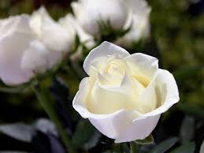

¿Por qué es mi flor favorita?
La rosa blanca es mi favoria por que me gusta mucho su olor sus colores y por que es una forma de expresar sinceridad y cariño si alguien te la regala
Descripción de la flor
La rosa blanca es una flor que simboliza la pureza, la paz y la inocencia. Su color delicado transmite serenidad y elegancia, y es comúnmente asociada con el amor sincero, el respeto y los nuevos comienzos. Su forma suave y aroma sutil la hacen una de las flores más apreciadas en ceremonias como bodas, homenajes o actos de reconciliación. Además de su belleza, la rosa blanca representa esperanza y verdad, siendo un símbolo universal de armonía y buenos deseos..
